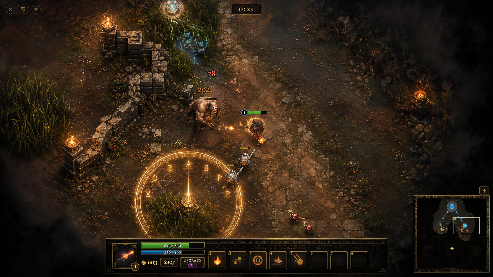

A Three-Empire Battle Arena
Three Empires Wage War. Only One Acropolis Will Stand.
Triarchs of Olympus is a three-player free-for-all MOBA fought across a symmetric triangular battlefield inspired by Ancient Greek myth. Command a champion, break your rivals' lanes, and be the last empire standing.
What is Triarchs of Olympus?
A Free-for-All Battle for Olympus
Triarchs of Olympus pits three rival empires — Azure, Crimson and Verdant — against one another on a single, symmetric triangular map, authored as one battlefield sector and mirrored three ways so every empire faces identical terrain.
You take command of one champion from a roster of eight, pushing lanes alongside your mob waves, felling enemy towers, contesting jungle camps and capture points, and hunting the timed bosses that rise from the central labyrinth. There are no fixed two-team sides here — every empire, human or AI, fights for itself. The last acropolis left standing wins.
Matches can be filled with one human and two AI rivals, two humans and one AI, or three humans connecting directly to one another — no accounts and no backend server required. Everything about a match, from gold to map control, resets when it ends; only your local settings are remembered.

Why the Empires Fight
The War for Olympus
Three empires — Azure, Crimson and Verdant — each lay claim to Olympus, and each has raised its own acropolis and champions to press that claim. There is no truce to break here, only a mountain that will answer to one ruler alone. Whichever empire's acropolis still stands when the others have fallen rules Olympus.
Every champion who takes the field carries their own reasons for fighting beneath an empire's banner — a duellist's endless search for a worthy opponent, a huntress's inherited discipline, an exile's grief, a Titan-touched caster's fire that is slowly killing him. Whatever brought them to the battlefield, when the horns sound, only victory matters.
Azure Empire
One of the three rival empires contesting Olympus, fielding champions of every role beneath its banner.
Crimson Empire
One of the three rival empires contesting Olympus, fielding champions of every role beneath its banner.
Verdant Empire
One of the three rival empires contesting Olympus, fielding champions of every role beneath its banner.
How a Match Unfolds
Built for Three-Way War
Every mechanic below is drawn directly from the live game.
Three-Empire Free-for-All
No fixed two-team split. Azure, Crimson and Verdant each fight for themselves, filled by any mix of human and AI players over a direct peer-to-peer connection.
Lanes & Towers
Two towers guard every lane approach to each empire's acropolis — an outer line and an inner line protecting the base itself.
Capture Points
Three walled altars sit off-lane in the jungle. Holding one grants your empire's lane mobs bonus damage, health, or speed.
Hand-Crafted Jungle
A maze of grass thickets and neutral camps — Creek Nest, Boar Den, Cyclops Hollow and Sphinx Perch — each guarded by a different monster.
The Stalking Horror
A wandering jungle hunter patrols the inner battlefield, ambushing isolated heroes it catches unseen for extra damage.
Timed Bosses
From the ten-minute mark, a boss rises in the central labyrinth. Felling it empowers your whole empire's mobs for a time.
Eight Champions, Five Abilities
Choose from eight original heroes, each with a five-ability kit that unlocks at levels 0, 5, 10, 15 and 20.
Shop & Ascension
Spend gold at the Agora of the Empire for items, and permanent upgrade points at the Temple of Ascension, whenever you're home.
Escalating Respawns
Hero respawn timers lengthen as more of the map's towers fall, so the tempo of a match rises as empires crumble.
Ready Your Champion
Olympus Awaits a Ruler
Three empires stand. Only one throne remains.